本文档由 paper-learning-workflow 生成，工作缓存位于 C:\Users\tianxl\.cache\arxiv_papers\2410.24164。
Sentinel: P_PI0_PAPER_LEARN_DOC_20260617_SENTINEL_7F3C92
0. 结论先读
这篇论文的核心不是“把 diffusion/flow matching 用到机器人动作”这么简单。它真正的主张是：一个面向通用机器人控制的基础模型，需要同时解决四件事：从互联网 VLM 继承语义和视觉先验；把离散语言模型改造成连续动作生成器；用跨机器人、跨任务的数据混合学习共享物理技能；再通过高质量 post-training 把基础能力压到复杂、长时程、灵巧任务上。
我对论文的判断是：π0 是 VLA 方向里很重要的一篇系统性论文，强项在工程整合、真实机器人覆盖面和 post-training 叙事；弱项在可复现性和可证伪性，因为最关键的 903M 私有机器人 timesteps、机器人硬件分布、任务采样细节和部分训练 recipe 不完全开放。它比“一个算法模块”更像“机器人基础模型路线图的一次可运行样机”。
阅读时需要避免两个误解。第一，π0 不是纯 prompt 机器人，也不是让 VLM 直接输出动作 token；它在 VLM 旁边接入 action expert，用 flow matching 生成连续动作块。第二，π0 的泛化证据不是标准公开 benchmark 上的单一数字，而是由多机器人 out-of-box、语言跟随、fine-tuning 新任务和复杂多阶段任务共同组成的证据链。
1. 前置概念 5 分钟速查表
| 术语 | 全称与含义 | 在本文中的作用 |
|---|---|---|
| VLA | Vision-Language-Action，视觉-语言-动作模型 | 把图像、语言指令和机器人状态映射到动作，是 π0 的模型范式 |
| VLM | Vision-Language Model，视觉语言模型 | π0 从 PaliGemma 初始化，继承互联网图文语义先验 |
| PaliGemma | Google 的开放 VLM 系列 | π0 的主干 VLM，论文中约 3B 级别 |
| Action expert | 动作专家网络 | 接收机器人状态、带噪动作和时间，负责连续动作生成 |
| Flow matching | 流匹配生成建模 | π0 的动作头训练目标，用向量场从噪声流向动作 |
| Action chunking | 动作块预测 | 一次预测未来 H 个动作，π0 使用 H=50 |
| Post-training | 后训练/任务专门化 | 用高质量数据把基础模型适配到洗衣、装盒等复杂任务 |
| Cross-embodiment | 跨本体 | 同一个模型覆盖单臂、双臂、移动操作等不同机器人形态 |
| OXE | Open X-Embodiment | 开源机器人数据来源之一 |
| DROID | Distributed Robot Interaction Dataset | 开源真实机器人数据来源之一，也出现在 openpi 复现实例里 |
| Bridge v2 | 机器人操作数据集 | 开源训练混合的一部分 |
| OpenVLA | 7B 参数开放 VLA baseline | 论文 out-of-box 对照方法之一 |
| Octo | 93M 机器人策略模型 | 非 VLA，但支持动作块，是重要 baseline |
| Euler integration | 欧拉积分 | π0 推理时用有限步积分把噪声动作更新为动作 |
2. 论文主张与贡献边界
论文标题里有三个关键词：Vision、Language、Action。Vision 和 Language 来自 PaliGemma 的图文预训练；Action 不是语言 token，而是机器人控制需要的连续控制向量。论文认为，真正的机器人基础模型不能只在语义层面“理解任务”，还必须在 20-50Hz 级别输出稳定动作，并能跨机器人形态复用技能。
作者给出的贡献可以拆成四层。
| 层次 | 论文实际做法 | 贡献性质 | 需要保留的边界 |
|---|---|---|---|
| 模型结构 | PaliGemma VLM + 约 300M action expert | 把互联网图文先验和连续动作生成接起来 | 不是从零训练的机器人 Transformer |
| 生成目标 | Conditional flow matching 预测动作向量场 | 相比自回归 action token 更自然地建模连续动作 | 不是证明 flow matching 在所有控制任务上优于 diffusion/ACT |
| 数据混合 | 开源数据 + 大规模 PI 私有数据，覆盖多机器人和 68 任务 | 真实机器人规模和多样性是主要壁垒 | 关键私有数据无法外部完全复现 |
| 训练流程 | pre-training 后按任务 post-training | 把 LLM 式 pretrain/posttrain 迁移到机器人 | 后训练仍依赖高质量真实机器人数据 |
这篇论文的创新更偏“系统架构 + 数据规模 + 训练 recipe”。如果只看数学，flow matching 本身不是本文原创；如果只看 VLM，PaliGemma 也不是本文原创。π0 的价值在于把这些组件组合成一个能在真实机器人上跑复杂任务的策略模型。
3. 方法解剖：从观测到动作块
3.1 输入输出定义
π0 在每个时刻读取机器人观测，观测包含多视角图像、语言指令和本体状态。模型不是输出单步动作，而是输出未来动作块。论文设定动作块长度 H=50，这一点在 openpi 代码中也能对上：Pi0Config.action_horizon = 50。
动作块预测的工程意义很直接：机器人控制需要高频动作，但完整 VLM 每个控制周期都从头生成会太慢；动作 chunk 让模型一次规划一小段未来，再由执行端逐步消费。代价是模型需要学会预测短期连续控制轨迹，并处理预测块与现实反馈之间的偏差。
3.2 模型结构
π0 的结构可以理解为“语义主干 + 动作专家”。
| 模块 | 作用 | 证据 |
|---|---|---|
| PaliGemma VLM | 处理图像和语言 token，提供语义上下文 | 论文方法部分和 openpi pi0_config.py |
| State projection | 把机器人状态投影到 action expert 宽度 | openpi pi0.py 中 state_proj |
| Action/time embedding | 把带噪动作与时间步编码给动作专家 | openpi action_in_proj、time_mlp_* |
| Action output projection | 输出动作向量场 | openpi action_out_proj |
论文中说模型总规模约 3.3B，其中 action expert 约 300M。openpi 默认配置也对应这个设计：paligemma_variant="gemma_2b"、action_expert_variant="gemma_300m"、dtype="bfloat16"、action_horizon=50、action_dim=32。这里要注意一个差异：论文正文按机器人最大动作维度讨论时提到的动作维度和 openpi 默认 action_dim=32 不完全等同，后者是开源实现为多平台 padding/接口统一保留的配置。
3.3 Flow matching 目标
论文把真实动作块记为 A，把高斯噪声记为 epsilon，并在 0 到 1 的连续时间 tau 上构造插值动作。
目标向量场可以写成从噪声点走向真实动作点的方向。
训练时模型接收观测、时间和带噪动作，预测向量场，并用均方误差拟合。
openpi 代码采用了等价但时间方向相反的约定：x_t = time * noise + (1 - time) * actions，u_t = noise - actions，推理时 dt = -1.0 / num_steps 从噪声端往动作端积分。论文写法和代码写法不是矛盾，而是坐标方向不同。关键点是：模型学习的是连接噪声动作和真实动作的速度场，而不是逐 token 生成动作。
3.4 推理过程
推理从随机噪声动作块开始，使用模型预测的向量场做 Euler 更新。论文和 openpi 默认都使用 10 个 integration steps。openpi 的 sample_actions 中 num_steps=10、dt=-1.0/num_steps，并循环更新 x_t + dt * v_t。这意味着 π0 的推理成本主要由一次 prefix 编码和 10 次 action expert 相关前向构成。
论文附录给出了实测延迟拆分：图像编码约 14ms，观测前向约 32ms，10 次动作前向约 27ms，若 off-board 还有约 13ms 网络延迟，合计 onboard 约 73ms、offboard 约 86ms，测试硬件为 RTX 4090。这个延迟解释了为什么动作 chunking 对高频控制很重要。
4. 数据与训练 recipe
论文的数据故事比模型公式更重要。公开数据只占训练混合的一部分：论文报告 9.1% 来自开源数据，包括 OXE、Bridge v2 和 DROID。更大的部分是 PI 自己收集的数据：903M timesteps，其中 106M 来自单臂机器人，797M 来自双臂机器人，覆盖 7 个机器人配置和 68 个任务。
| 数据来源 | 规模/角色 | 价值 | 风险 |
|---|---|---|---|
| OXE / Bridge v2 / DROID | 开源数据，约占 9.1% | 提供可外部理解的数据基底 | 与论文最强结果的数据分布仍有差距 |
| PI 私有单臂数据 | 106M timesteps | 扩展单臂操作技能 | 不公开，外部难以复验 |
| PI 私有双臂数据 | 797M timesteps | 支撑洗衣、装盒、整理等复杂双臂技能 | 是论文壁垒的核心部分 |
| 多机器人任务混合 | 7 配置、68 任务 | 提供 cross-embodiment 训练信号 | 采样策略和任务质量影响巨大 |
作者还使用任务-机器人组合的采样重加权：样本数为 n 的组合按 n 的 0.43 次方加权。这类小于 1 的幂次采样会压低大数据任务的支配性，让小数据任务仍能被模型看到。对机器人数据混合来说，这是一个实际工程选择：数据量最大的不一定是最有价值或最稀缺的任务。
训练流程可以概括为三步。第一，继承 PaliGemma 初始化，保留互联网语义和视觉知识。第二，在大规模机器人混合上预训练，学到跨机器人动作先验。第三，对复杂任务用高质量数据 post-training，例如洗衣折叠、多阶段装配和长时程整理。
5. 实验设计与证据审查
论文实验不是一个单 benchmark 数字，而是多类真实机器人评测。
| 实验类型 | 问题 | 对照/设置 | 我对证据强度的判断 |
|---|---|---|---|
| Out-of-box 预训练评测 | 不做任务专门训练能否直接做多任务 | 5 类任务，每方法每任务 10 episodes；对 OpenVLA、Octo、π0-small 等 | 强，体现基础模型价值，但任务仍由作者体系定义 |
| 语言跟随 | 能否按自然语言或高层 VLM 指令改变行为 | flat / human / high-level VLM 指令设置 | 中强，证明语义接口有用，但 prompt 敏感性仍需外部评估 |
| 新灵巧任务 fine-tuning | 少量新任务数据能否快速适配 | 学习新 dexterous tasks | 强，说明 post-training 路线有效 |
| 复杂多阶段任务 | 能否做长时程真实任务 | 10 trials，使用 partial score rubric | 强但非标准化，依赖 rubric 和环境 |
| 与 baseline 对比 | 是否超过 OpenVLA/Octo/小模型 | 训练步数和计算做了部分公平性处理 | 有价值，但数据和架构能力并不完全可分离 |
最强证据来自真实机器人上复杂任务的视频和多机器人任务覆盖；最弱证据是外部可重复的公开 benchmark。论文没有把 π0 还原为“只换 flow matching 头”的受控消融，因为它的核心能力来自模型、数据、训练和硬件系统共同作用。
6. 横向对比
| 方法 | 动作表示 | 语义来源 | 机器人数据 | π0 相对位置 |
|---|---|---|---|---|
| OpenVLA | 自回归动作 token/离散化路线 | VLM | 开源机器人数据为主 | π0 更强调连续动作流和 action chunk |
| Octo | 机器人策略模型，支持动作块 | 不以大 VLM 语义为核心 | 大规模机器人数据 | π0 引入 VLM 语义先验和更强跨任务设定 |
| Diffusion Policy | 条件扩散生成动作 | 通常不依赖 VLM 主干 | 单任务/少任务更常见 | π0 把扩散/flow 类生成头推到 VLA 基础模型规模 |
| RT 系列 | 大规模机器人策略/语言条件控制 | 语言/视觉模型 | Google 机器人数据 | π0 的特色是公开论文中明确的 flow matching action expert |
| π0-small | 小模型，不用 VLM 初始化 | 无互联网 VLM 先验 | 同类机器人数据 | 用来隔离 VLM 初始化和模型规模的重要 baseline |
π0 的路线和 Diffusion Policy 有亲缘关系：都把动作看成连续轨迹生成问题。但 π0 更接近“VLM + continuous action generation”的基础模型路线，而不是单任务模仿学习策略。与 OpenVLA 相比，π0 更少把动作语言化，更强调高频连续控制。
7. 理论反驳与局限
第一，论文还不能证明“flow matching 是通用机器人控制的唯一正确生成范式”。它证明的是，在作者的数据规模、模型结构和训练系统下，flow matching 作为连续动作头是有效的。要单独证明 flow matching 优于 autoregressive、diffusion policy、ACT 或其他轨迹头，需要更细粒度的受控实验。
第二，跨本体泛化仍然受动作空间定义和归一化强烈影响。openpi 的 docs/norm_stats.md 明确要求根据目标机器人选择复用预训练 norm stats 或重新计算 norm stats，并强调动作空间定义必须匹配。也就是说，π0 并不是把任意机器人接上就能稳跑；机器人接口、频率、动作维度、夹爪定义和数据过滤都可能成为失败点。
第三，论文中最具说服力的数据来自私有机器人数据。外部研究者可以使用 openpi 的 checkpoint 和 fine-tuning recipe，但很难重建论文的 full pretraining mixture。因此可复现目标应当设为“复现 openpi fine-tuning / inference 行为”，而不是“完全复现论文基础模型训练”。
第四，真实世界评测的 partial credit rubric 很有必要，但也降低了横向可比性。对复杂任务来说，0/1 成败过于粗糙；但 partial score 如何定义，会直接影响不同模型之间的比较。
8. 代码与复现：openpi 对照
本次工作克隆并检查了官方 openpi 仓库，本地路径为 C:\Users\tianxl\.cache\arxiv_papers\2410.24164\openpi。仓库当前公开了 π0、π0-FAST 和 π0.5 相关模型、checkpoint、推理和 fine-tuning 示例。
| 论文声明/概念 | openpi 证据 | 复现含义 |
|---|---|---|
| PaliGemma + action expert | src/openpi/models/pi0_config.py 中 paligemma_variant 和 action_expert_variant | 可以直接看到结构配置 |
| 动作块 H=50 | Pi0Config.action_horizon=50 | 与论文设定一致 |
| 默认 action_dim=32 | Pi0Config.action_dim=32 | 开源接口为多机器人 padding/统一动作空间服务 |
| Flow matching loss | src/openpi/models/pi0.py 中 x_t、u_t、v_t 和 MSE | 论文核心训练目标可代码定位 |
| 10 步推理积分 | sample_actions(..., num_steps=10) | 与论文推理成本对应 |
| checkpoint | README 列出 gs://openpi-assets/checkpoints/pi0_base 等 | 可做 fine-tuning 起点 |
| norm stats | docs/norm_stats.md | 复现时必须处理动作/状态归一化 |
| DROID full training | examples/droid/README_train.md | 全量 DROID 约 1.8TB，100k iterations，8x H100 约 2 天 |
复现路线建议分三档。
| 档位 | 目标 | 资源 | 是否能验证论文核心 |
|---|---|---|---|
| A. 读代码 + 跑 checkpoint inference | 确认模型接口、动作输出和推理服务 | 单 GPU 或调用服务 | 只能验证工程路径 |
| B. 小数据 fine-tuning | 在 LIBERO/ALOHA/DROID 子集上适配 | A100/H100 更稳，需要 norm stats | 可验证 post-training 机制 |
| C. 大规模 DROID/full robot training | 近似复现开源 pipeline | 1.8TB 数据、8x H100 级别 | 可验证一部分 scaling，但仍不是论文私有混合 |
关键复现提醒：如果目标机器人和预训练统计相似，可以尝试复用 openpi 提供的 norm stats；如果不相似，应重新计算并对照。DROID 数据还需要 idle transition filtering，否则大量静止片段会污染动作学习。
9. 论文图像清单与解读
本次已从 TeX/PDF 中抽取并整理原论文图片，位于 upload_figures 目录。飞书文档创建后将上传核心原图和生成解释图。
| 文件 | 类型 | 解读 |
|---|---|---|
teaser_fig.png | 原论文 teaser | 展示 π0 在多任务真实机器人中的总体能力，是论文叙事入口 |
fig2_final.jpeg | 原论文方法图 | 概括 VLM、机器人数据和动作输出的组合 |
overview.png | 原论文概览图 | 适合理解 pretrain/posttrain 与多机器人数据混合 |
combined-robot-allocation-chart.png | 原论文数据图 | 展示机器人/任务数据分布，是判断数据壁垒的重要图 |
robots_compressed.png | 原论文机器人图 | 展示跨本体机器人平台 |
pretrain_filmstrip_compressed.png | 原论文视频帧 | 支撑 out-of-box 任务评测的直观证据 |
language_guided_filmstrip_compressed.png | 原论文视频帧 | 支撑语言跟随能力 |
learning_dexterous_tasks_filmstrip_compressed.png | 原论文视频帧 | 支撑 post-training 灵巧任务 |
multi_stage_filmstrip_compressed.png | 原论文视频帧 | 支撑复杂多阶段任务 |
complex_finetune.png | 原论文任务图 | 展示复杂 fine-tuning 任务集合 |
timestep_sampling.png | 原论文/附录图 | 对理解训练时间采样有帮助 |
此外生成了 3 张解释图：generated_mechanism.png 用于解释 π0 的机制链路，generated_evidence_audit.png 用于证据强度审查，generated_repro_surface.png 用于复现风险面梳理。这些图是解释性图像，不是论文原图。
10. 与已有飞书文档的交叉对比
本次在用户飞书中命中两份相关文档。
| 文档 | URL | 与本文关系 |
|---|---|---|
[2024-12-4]π0论文分享 | https://mi.feishu.cn/docx/GJjjdl5VZoU9PVxm1Xocr5fanff | 已有 π0 分享材料，可作为概念导读；本文补充 paper-learning-workflow 的公式、代码、复现和证据审查 |
DiffVLA 论文深度解析 | https://mi.feishu.cn/wiki/Eimvwd4YkiBDmPktEuPcll7inuh | 同属 VLA/动作生成路线，可用于比较 diffusion/flow/action token 等动作建模范式 |
与 DiffVLA 类路线相比，π0 的重心不是单一 diffusion 模块，而是将 VLM 语义主干、连续动作生成和跨机器人数据混合做成基础模型。与已有 π0 分享相比，本文更强调三个“可落地问题”：代码如何对上论文、哪些结果不可完全复现、复现实验应从哪个资源档位开始。
11. 最终判断
π0 可以看作“机器人领域 GPT-3 时刻”之前的一块关键拼图：它还不是通用机器人智能，但展示了通用策略模型需要的基本形状。它把机器人学习从“每个任务训练一个策略”推进到“一个基础模型通过 prompt 和 post-training 覆盖多个机器人和任务”。论文最有价值的不是某个单点算法，而是证明了 VLM 初始化、连续动作 flow head、大规模真实机器人数据和后训练 recipe 可以组成一个现实可运行的系统。
对研究者来说，应该从三个角度吸收这篇论文。方法上，连续动作生成头比动作 token 化更贴近高频控制；数据上，跨本体数据混合和采样权重不是附属细节，而是核心机制；工程上，norm stats、动作空间定义、idle filtering、延迟预算和推理服务同样决定模型能否跑在真实机器人上。
对复现者来说，合理目标不是完整重训 π0，而是使用 openpi 做可控的小规模验证：先跑 checkpoint inference，再做 LIBERO/ALOHA/DROID 子集 fine-tuning，最后才考虑全量 DROID 或自采机器人数据。任何“复现 π0 论文结果”的计划如果没有机器人硬件、动作接口和高质量数据采集流程，都只能复现模型接口，不能复现论文的系统能力。
12. 来源与证据
| 来源 | 用途 |
|---|---|
arXiv https://arxiv.org/abs/2410.24164 | 论文版本、摘要、作者、PDF/TeX 来源；当前版本为 v4，2026-01-08 |
官方博客 https://www.pi.website/blog/pi0 | 项目叙事、任务视频、跨机器人训练混合说明 |
官方 openpi https://github.com/Physical-Intelligence/openpi | 代码、checkpoint、fine-tuning、norm stats 和 DROID 训练说明 |
本地 pdf_parsed.md | 论文正文解析 |
| 本地 TeX extracts | 方法、数据、实验和附录细节核对 |
| 飞书搜索命中文档 | 与用户已有材料做交叉对比 |
13. Workflow 自评
已完成的 workflow 环节包括：arXiv PDF/TeX 拉取、本地解析、任务计划与进度文件、飞书内部关联搜索、外部官方资源核对、openpi 代码克隆和 paper-vs-code 对照、原论文图像提取、解释图生成、公式写入前消毒准备、飞书写入与 sentinel/read-back 验证准备。
本次最主要的过程问题是 Windows PowerShell 与 Bash/Python 多行字符串混用导致多次异常中断。后续已改为文件级补丁、小命令验证和 MCP 写入，避免再用复杂 here-string 拼接长文档。
14. HTML 深读增补：为什么这不是一个简单 flow head
这一节是 HTML 版补充的深度展开，用来修复上一版过短的问题。核心判断是：π0 的能力不是由 flow matching 单点产生，而是由语义主干、动作专家、动作块、数据混合、post-training 和真实机器人评测共同支撑。只讲“VLM + flow matching”会把论文读浅。
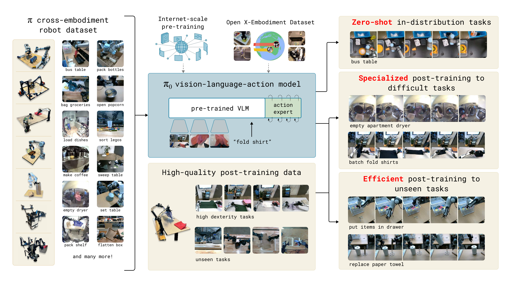
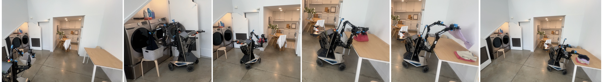
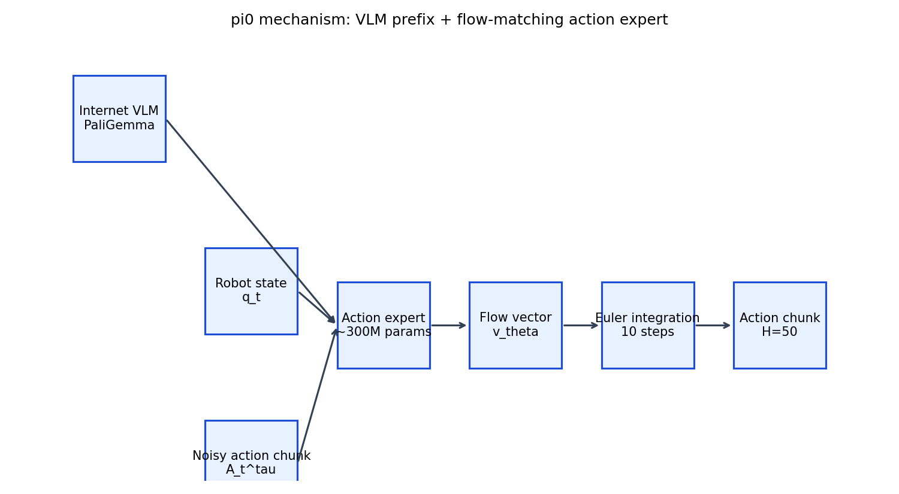
14.1 机制链路逐步拆解
| 步骤 | 输入/状态 | 模型处理 | 输出/风险 |
|---|---|---|---|
| Prefix 编码 | 多视角图像、语言指令、token mask | PaliGemma 图像编码器和 LLM 形成上下文 | 得到可被 action expert 查询的语义/视觉前缀 |
| Suffix 构造 | 机器人 state、noisy actions、timestep | state/action/time 投影到 action expert token 空间 | 形成要预测向量场的动作序列 |
| 训练前向 | prefix + suffix | joint attention 让动作 token 查询上下文 | 输出每个动作步的速度向量 |
| Loss | 预测向量场 v_t 与目标 u_t | 逐动作维度 MSE | 训练稳定性取决于时间采样、动作尺度和 norm stats |
| 推理 | 初始高斯噪声动作块 | 10 次 Euler 更新 | 得到 H=50 连续动作块 |
代码证据：pi0.py 中真正发生了什么
compute_loss 里先采样高斯噪声和 Beta 分布时间，再构造 x_t = time * noise + (1 - time) * actions，目标是 u_t = noise - actions。随后模型前向得到 v_t，返回 mean(square(v_t - u_t))。
sample_actions 里先对 prefix 建 KV cache，再循环调用 suffix/action expert，使用 dt=-1/num_steps 从 t=1 积分到 t=0。这解释了为什么论文附录会把 10 次动作前向列入延迟预算。
14.2 数学目标的直觉和边界
flow matching 的直觉是：不要让模型一步直接猜动作，而是学习“从噪声动作块走到真实动作块”的速度场。对连续控制来说，这比把动作离散成 token 更自然，因为关节、夹爪、末端位姿本来就是连续量。
但这个目标本身不能单独解释 π0 的全部能力。若没有 PaliGemma 初始化，它缺少语义和视觉先验；若没有私有机器人数据，它缺少跨任务物理覆盖；若没有 post-training，它很难压到洗衣、装盒、多阶段操作这样的复杂任务。
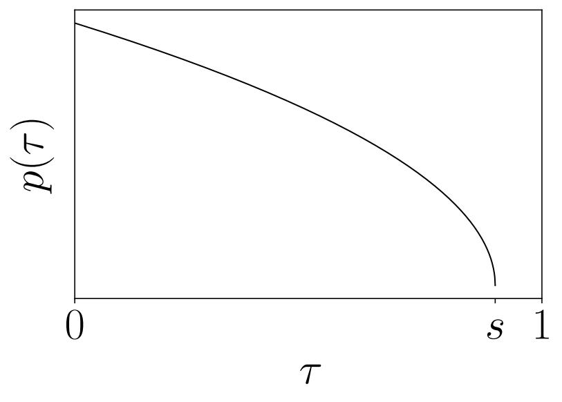
14.3 数据混合不是背景信息，而是论文的核心机制
π0 的数据分布决定它是否真的“通用”。论文报告开源数据只占 9.1%，PI 私有数据达到 903M timesteps，且双臂数据远大于单臂数据。这个事实直接改变论文结论的解释方式：外部复现可以验证 openpi 的模型接口和 fine-tuning recipe，但不能完整复现论文的基础模型能力。
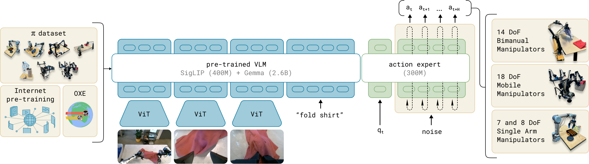
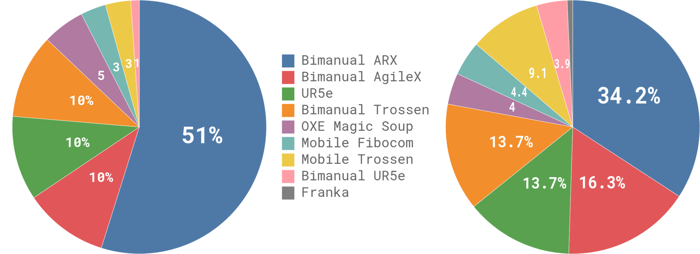
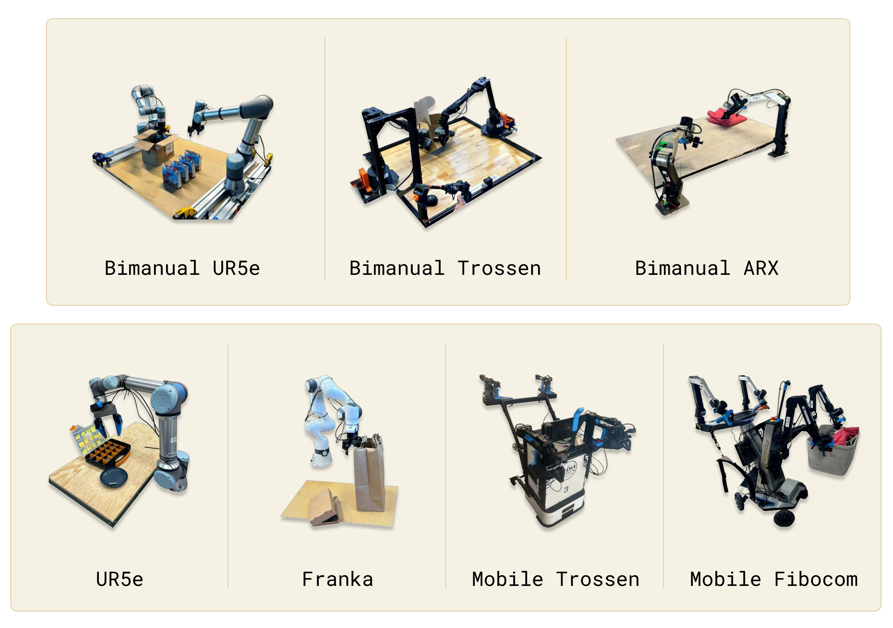
| 读图问题 | 应该看到什么 | 为什么重要 |
|---|---|---|
| 数据 allocation chart | 机器人/任务分布不是均匀的 | 通用能力来自数据覆盖和重加权，不只是模型规模 |
| 机器人平台图 | 不同本体的传感器和动作空间不同 | 跨本体泛化依赖接口规范化与动作空间 padding |
| overview 图 | pre-training 与 post-training 是两段式 | 基础能力和复杂任务能力不能混为一谈 |
14.4 实验结果应该怎样读
π0 的实验不是传统“一个表格秒杀 baseline”。它更像一个系统能力谱：out-of-box 说明基础技能覆盖，语言任务说明语义条件控制，dexterous fine-tuning 说明后训练有效，多阶段 filmstrip 说明真实世界闭环能跑起来。
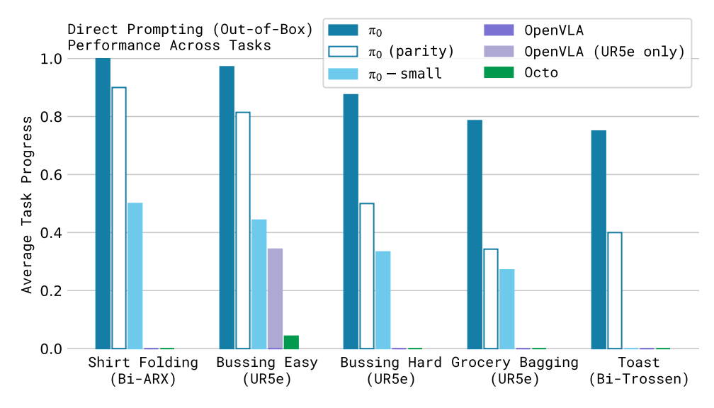
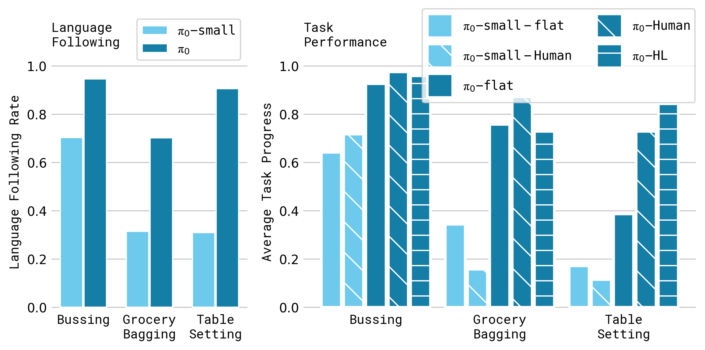
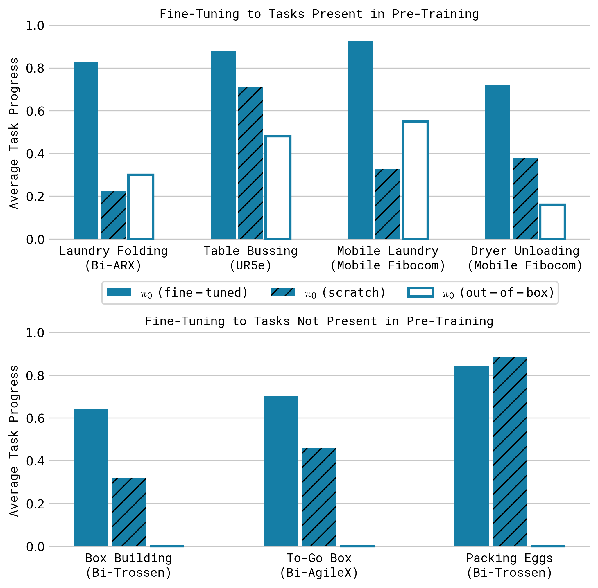
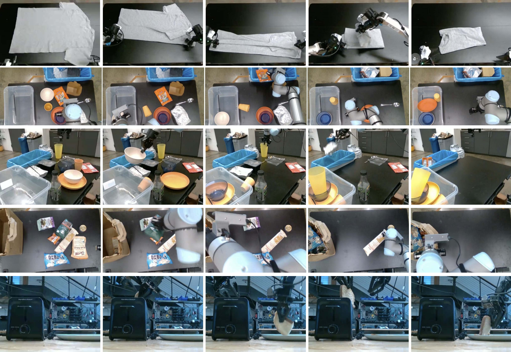
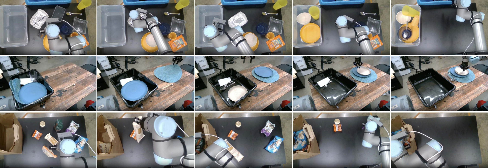
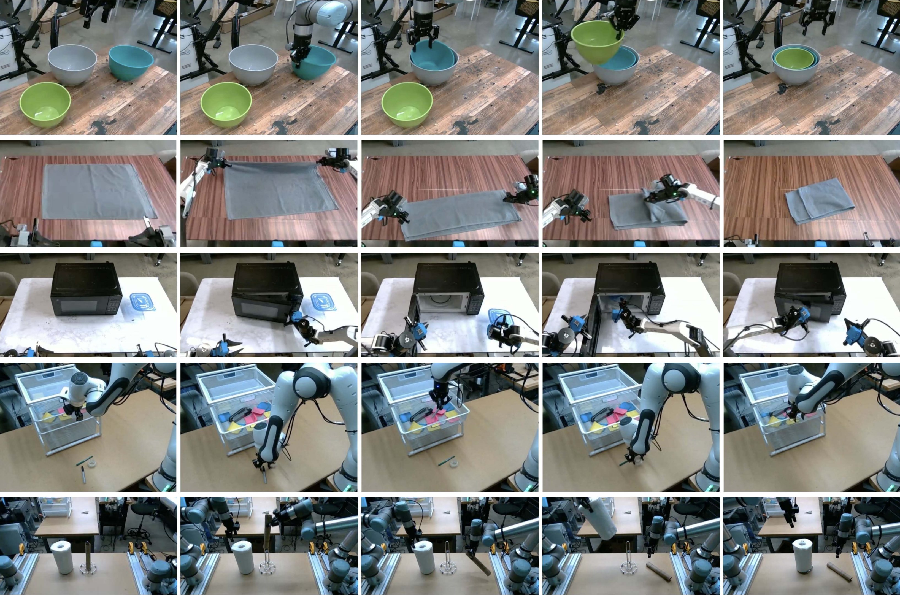
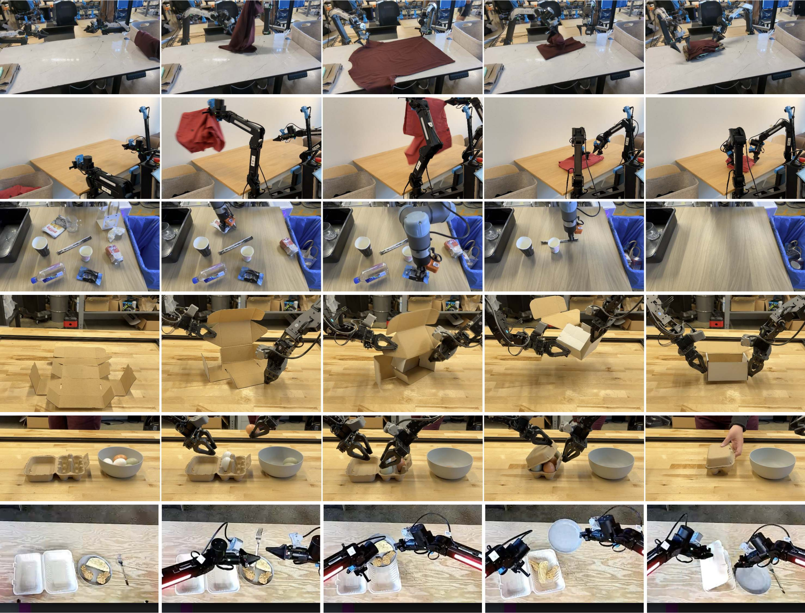
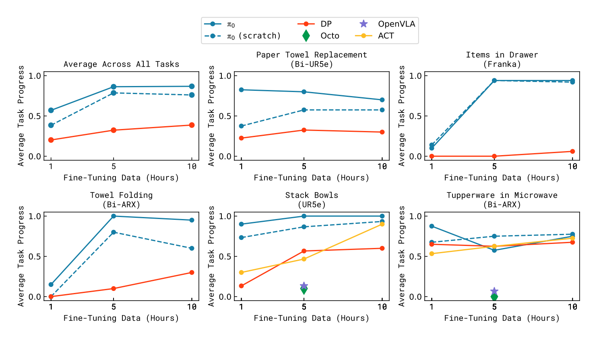
| 证据 | 支持的主张 | 不能支持的主张 |
|---|---|---|
| 预训练任务图/filmstrip | 模型有跨任务 out-of-box 能力 | 不能证明任意新机器人零样本成功 |
| 语言任务图/filmstrip | 语言条件确实影响动作 | 不能证明长指令规划完全由模型内部完成 |
| 灵巧任务/fine-tune 图 | post-training 能把基础能力压到复杂任务 | 不能说明少量数据总是足够 |
| 多阶段 filmstrip | 系统可以执行长时程任务 | 不能提供公开 benchmark 式可复验数字 |
14.5 Paper vs Code：复现时真正会踩的坑
| 坑 | 论文读者容易忽略的点 | openpi 证据/处理 |
|---|---|---|
| 时间方向相反 | 论文公式和代码里的 t 方向不同 | sample_actions 注释明确说明 t=1 是噪声、t=0 是目标 |
| action_dim=32 | 不是每台机器人都有 32 维动作 | Pi0Config.action_dim=32 是统一接口，低维动作需要 padding/mask/定义一致 |
| norm stats | 动作尺度不是无关预处理 | docs/norm_stats.md 要求决定复用或重算统计 |
| DROID action type | joint velocity 与模拟评测不兼容 | DROID 训练文档建议使用 joint position action |
| idle filtering | 真实机器人数据有大量静止片段 | DROID recipe 预计算 non-idle ranges |
| 资源预算 | fine-tune 和 full training 不是一个量级 | full DROID 1.8TB，8x H100 约 2 天；PaliGemma 起训约 5 天 |
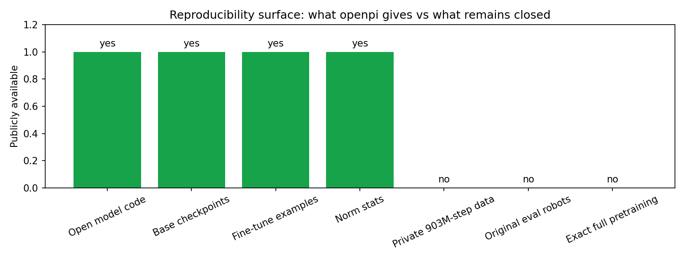
14.6 五个严肃反驳问题
Q1：是不是只要 flow matching 就能得到 π0？
不能。flow matching 是动作建模头，π0 的系统能力还依赖 PaliGemma 初始化、大规模机器人数据、post-training、动作归一化和实时推理工程。
Q2：私有数据占比这么高，论文是否可复现？
完整基础模型不可完全复现；但 openpi 使 checkpoint inference、部分 fine-tuning 和代码级机制复现成为可能。复现目标必须分层定义。
Q3：跨机器人能力是不是被夸大？
论文展示了多本体覆盖，但跨本体成功依赖动作空间定义、norm stats 和任务数据质量。把任意新机器人接上并不自动成立。
Q4：语言能力是否等同于规划能力？
语言指令提供条件，但真实长时程任务仍依赖动作闭环、环境反馈和 post-training 数据。不能把语言跟随成功直接等同于通用规划。
Q5：实验视频是否足够科学？
视频和 filmstrip 对真实机器人论文很重要，但公开 benchmark、失败率分布、环境随机性和第三方复验仍然不足。这是系统论文常见的证据边界。
14.7 读者实践路线
| 目标 | 推荐动作 | 停止条件 |
|---|---|---|
| 快速理解 | 读本 HTML 的 0/3/5/8/14 节，再看 Figure Inventory | 能解释 action expert 与 flow matching 的区别 |
| 代码复现 | 定位 pi0_config.py、pi0.py、norm_stats.md | 能跑通 checkpoint 或小数据 fine-tune |
| 研究比较 | 对比 OpenVLA、Octo、Diffusion Policy、RT 系列 | 能说清动作 token/动作块/flow head 的取舍 |
| 项目落地 | 先定义机器人 action/state space，再处理 norm stats 和数据过滤 | 不要在动作空间未对齐时训练 |
15. 原论文图像清单 / Figure Inventory
本 HTML 版采用原论文图像优先策略。原论文图像是证据，生成图只用于解释机制和复现风险。上一版 π0 HTML 太短的一个原因，就是只把图片放进页面，而没有把每张图的证据角色讲透。
| 编号 | 本地文件 | 证据角色 |
|---|---|---|
| 1 | teaser_fig.png | Teaser: π0 在多类真实机器人任务上的能力展示。 |
| 2 | fig2_final.jpeg | 方法图: VLM 主干、机器人观测和动作输出的组合。 |
| 3 | overview.png | Overview: pre-training、post-training 与多机器人数据混合。 |
| 4 | combined-robot-allocation-chart.png | 数据分布: 机器人/任务 allocation，是复现边界的核心证据。 |
| 5 | robots_compressed.png | 机器人平台: 跨本体训练和评测所覆盖的硬件形态。 |
| 6 | pretrain_tasks.png | 预训练任务集合: out-of-box 评测覆盖面。 |
| 7 | language_tasks.png | 语言跟随任务集合: 语言条件控制能力。 |
| 8 | complex_finetune.png | 复杂 fine-tuning 任务集合。 |
| 9 | timestep_sampling.png | Timestep sampling: flow matching 时间采样细节。 |
| 10 | pretrain_filmstrip_compressed.png | 预训练任务 filmstrip: 真实机器人执行片段。 |
| 11 | language_guided_filmstrip_compressed.png | 语言引导 filmstrip: 指令条件下的行为变化。 |
| 12 | learning_dexterous_tasks_filmstrip_compressed.png | 灵巧任务 filmstrip: post-training 让基础策略压到新任务。 |
| 13 | multi_stage_filmstrip_compressed.png | 多阶段任务 filmstrip: 长时程任务证据。 |
| 14 | finetune_tasks_over_time.png | Fine-tune tasks over time: post-training 任务谱随时间扩展。 |
{
"original_paper_figures": [
"teaser_fig.png",
"fig2_final.jpeg",
"overview.png",
"combined-robot-allocation-chart.png",
"robots_compressed.png",
"pretrain_tasks.png",
"language_tasks.png",
"complex_finetune.png",
"timestep_sampling.png",
"pretrain_filmstrip_compressed.png",
"language_guided_filmstrip_compressed.png",
"learning_dexterous_tasks_filmstrip_compressed.png",
"multi_stage_filmstrip_compressed.png",
"finetune_tasks_over_time.png"
],
"generated_concept_images": [
"generated_mechanism.png",
"generated_evidence_audit.png",
"generated_repro_surface.png"
],
"omitted_data_visualizations": [],
"missing_local_images": 0
}
16. 网站与右侧持久问答交付
本报告会导入 C:\Users\tianxl\paper-html-site，由左侧论文库管理，由右侧 Q&A 面板提供持久问答。技术交付不能替代内容深度；这也是本次修复的核心：HTML/site 验证通过，只说明网页能用，不说明解读足够深入。
| 项目 | 当前状态 | 验证方式 |
|---|---|---|
| HTML 文件 | C:\Users\tianxl\.cache\arxiv_papers\2410.24164\html_report\pi0-deep-analysis.html | 文件存在、无 raw equation、图片引用可解析 |
| 论文库导入 | 0-html | SQLite paper 记录 + reader URL |
| 右侧 Q&A | 结构化快答 + 持久化记录 | messages 表 + 页面历史建议 |
| 测试 | 17/17 pass | npm test + node --check |
17. Delivery Sentinel
Sentinel: P_PI0_HTML_REPORT_20260618_SENTINEL_DEEP_V2